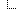
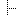

|  | Sales |
|  | East Coast |
| West Coast |
%RENDERLIST% macro is handled by the RenderListPlugin
%RENDERLIST{"org" focus="Sales.WestCoastTeam"}%
* [[Eng.WebHome][Engineering]]
* [[Eng.TechPubs][Tech Pubs]]
* [[Sales.WestCoastTeam][Sales]]
* [[Sales.EastCoastTeam][East Coast]]
* [[Sales.WestCoastTeam][West Coast]]